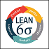
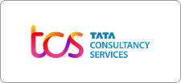
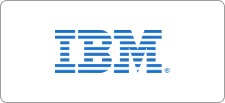

Online PGDM Executive Program for Working Professionals
Trusted by Professionals from Top Organizations Across India
Trusted by Professionals from Top Organizations Across India
for a dynamic global economy

7 Value-added Certifications
International Exposure
Apply with Easy EMI
Smart Learning LMS
100% Placement Assistance
Nashik is rapidly evolving from an industrial town into one of Maharashtra's key business hubs driven by manufacturing clusters at Ambad, Satpur and Sinnar MIDC, a globally recognised wine and agro-processing industry, aerospace and defence units like HAL , and a growing IT sector creating strong demand for professionals ready to move from execution into decision-making roles: engineers into project heads, team leads into plant managers, marketers into brand strategists. MITSDE's Online PGDM Executive for Working Professionals , backed by MIT Pune's 40+ year legacy and AICTE approval , lets you make that leap without relocating or pausing your income. With a curriculum co-designed alongside KPMG, EY, and Digital Maven, 15+ specialisations, No Cost EMI, 100% placement assistance, and a 1,00,000+ strong alumni network, over 70,000 working professionals have already trusted MITSDE to power their careers forward — with placements delivering packages up to 15 LPA.
Not every career path needs the same management degree that’s why the Online PGDM Executive Course in Nashik by MIT School of Distance Education offers 15+ specialisations across three AICTE-approved program formats, so you choose based on where you are in your career, not just what’s on offer. Whether you’re a fresh graduate building your first professional edge or a working professional in Nashik ready to step into leadership, there’s a program length, fee structure, and specialisation built for you.
The industry-focused PGDM curriculum is co-designed with KPMG, EY, and Digital Maven, so what you learn maps directly to what employers are hiring for right now not theory disconnected from the job market. Compare the three programs below, pick the specialisation that fits your goals, and start your online management course in Nashik with a clear path to a better role.
Built for professionals already leading teams, MITSDE’s PGDM Executive sharpens the operations and strategy skills needed to run a function, not just complete a task streamlining processes, optimising resources, and driving profitability. For professionals in Nashik’s manufacturing, supply chain, and industrial sectors, these are the exact capabilities that separate a senior executive from a functional head.
APPLY NOWProgram Fee -
₹1,00,000/-No Cost EMI Available
Duration - 15 Months
Eligibility - Any Graduate having 5+ years of work experience

MITSDE’s PGDM is built for professionals ready to move from doing the work to leading it. Across 24 months, you’ll build the decision-making, strategic thinking, and cross- functional skills that Nashik-based professionals need to step into management roles through a curriculum that stays connected to what employers are actually hiring for.
APPLY NOWProgram Fee -
₹1,05,000/-No Cost EMI Available
Duration -24 Months
Eligibility - Graduation
MITSDE’s PGDBA gives working professionals in Nashik a strong foundation in business strategy, without stepping away from their job. It’s built for those who want to think bigger, lead with more confidence, and be ready for the next opportunity, whenever it comes.
APPLY NOWProgram Fee -
₹95,000/-No Cost EMI Available
Duration - 24 Months
Eligibility -Graduation
A postgraduate qualification alone doesn’t always answer the “what can you actually do” question in an interview practical, tool-based certifications do. MITSDE builds these directly into the PGDM and PGDM Executive journey through structured lab sessions, so learners in Nashik graduate with more than a degree: they graduate with proof of applied skill.
Value-added Certificates under Lab Sessions (Available for PGDM & PGDM Executive learners)
These certification modules are built around tools, frameworks, and domain knowledge that recruiters actively screen for not academic add-ons, but capabilities you can list on your resume and speak to confidently in an interview.



Free AI Masterclass
As AI reshapes how every business function from marketing to operations makes decisions, MITSDE includes a free AI Masterclass: Value-added Certificate with every PGDM and PGDM Executive program, so learners in Nashik graduate ready for where business is heading, not just where it’s been.
Global Exposure
A management qualification earned only within city limits can only take you so far. MITSDE equips working professionals including those based in Nashik with international exposure, cross-border business perspective, and practical insight into how global companies operate, so your PGDM prepares you for opportunities far beyond the local job market.

MITSDE’s collaboration with KPMG and EY , two of the world’s Big Four consulting firms means your curriculum isn’t built in isolation from industry, it’s built with it.
This partnership gives learners access to industry-recognised certifications, real consulting-grade case studies, and practical frameworks woven directly into the postgraduate journey so what you study for exams is also what you’ll use on the job.

MITSDE’s International Study Tours turn classroom learning into first-hand global exposure university workshops, industry visits, and cultural immersion across Dubai, Malaysia, Thailand, Singapore, and Europe culminating in an internationally recognised university certificate that few other Indian management programs offer.

The International Summer Internship Program (ISIP) gives learners direct, hands-on exposure to how global businesses actually operate through live industry projects, mentorship from international professionals, and cross-cultural collaboration. Delivered over 4–12 weeks through a blend of virtual learning and on-site engagement, it’s designed to fit around a working professional’s schedule.

Through the International Relations Office (IRO), MITSDE opens doors well beyond a single postgraduate program supporting student exchanges, semester-abroad opportunities, faculty exchanges, and joint research initiatives, alongside pathways into MS and PhD studies abroad backed by international partnerships and funding support.
Where Your Next Role Starts
Taking Shape
A qualification only matters if it opens doors which is why MITSDE backs every PGDM with real placement infrastructure: dedicated industry engagement, structured placement assistance, and an active hiring partner network, supporting professionals across Nashik’s manufacturing, IT, BFSI, and infrastructure sectors as they move into better roles.






For working professionals weighing an MBA-equivalent qualification against the cost of quitting a job, the answer is clear: an Online PGDM Course for Working Professionals in Nashik delivers the same career acceleration without the income gap. MITSDE’s AICTE-accredited PGDM combines flexible LMS-based learning, an industry-built curriculum, live projects, and structured placement support so professionals in Nashik can upskill, take on bigger responsibilities, and move into leadership roles while their salary keeps growing, not pausing.

working professionals trained through MIT School of Distance Education programs

years of professional management education

approved PGDM programs recognised across India

industry hiring partners across sectors

Universities

learners placed across industries
Alumni Network

Institutions
A PGDM shouldn’t end at the last exam. MITSDE builds a complete career-support ecosystem around every learner regardless of location, including Nashik so the value of the program continues well after the curriculum is complete.

MOCS goes beyond generic placement support offering one-on-one career guidance, skill-building workshops, and expert mentoring that help professionals walk into interviews with real confidence and workplace readiness.

MITSDE Bootcamps deliver focused, application-driven training in high-demand areas like Business Analytics and Digital Marketing led live by industry experts, so you leave with skills you can apply at work the next day, not just notes from a lecture.
MITSDE Labs turn theory into practice through hands-on tool training, real case discussions, and guided workshops building the applied capability that separates candidates who’ve studied management from those who can actually do it.
Synergy Sphere puts learners in direct conversation with industry leaders and practitioners creating real mentorship and networking opportunities that a textbook alone can never offer.
The MITSDE Centre for Innovation & Entrepreneurship supports learners who want to build, not just manage offering mentorship, networking, and industry engagement for anyone exploring entrepreneurial ideas alongside their PGDM.
“The placement support felt structured and serious. Resume, interviews, guidance—each step prepared me for opportunities that mattered.”

“The LMS kept everything within reach. Live sessions, recordings, quick support—learning moved at my pace without losing momentum.”

“International exposure added a new dimension to my learning. It expanded how I think, not only what I know.”

“The placement support felt structured and serious. Resume, interviews, guidance—each step prepared me for opportunities that mattered.”
“The LMS kept everything within reach. Live sessions, recordings, quick support—learning moved at my pace without losing momentum.”
“International exposure added a new dimension to my learning. It expanded how I think, not only what I know.”
Yes. MITSDE's PGDM, PGDM Executive, and PGDBA programs are fully AICTE-approved. This means your qualification is nationally recognised and accepted by employers across Nashik, Maharashtra, and India.
A PGDM (Post Graduate Diploma in Management) is functionally equivalent to an MBA in the corporate world. MITSDE's AICTE-approved PGDM is industry-aligned, often more practically-focused, and valued equally by top recruiters including Deloitte, TCS, and Accenture many of whom hire from Nashik's talent pool.
Absolutely that is exactly who this program is designed for. All sessions are available via our Smart LMS with recorded lectures, so professionals working in Nashik's industrial, IT, or service sectors can study at their own pace after work or on weekends. There are no mandatory offline attendance requirements.
MITSDE offers 15+ specialisations including Marketing Management, Finance Management, Human Resource Management, Information Technology, Operations Management, Business Analytics, Digital Marketing, Logistics & Supply Chain, Construction & Project Management, Banking & Financial Services, and more.
Program fees range from ₹95,000 (PGDBA) to ₹1,05,000 (PGDM). No Cost EMI options are available on all programs, making it easy for professionals in Nashik to start their education without a large upfront investment. Call 9112-207-207 for detailed fee breakdowns.
MITSDE's placement support includes resume building, mock interviews, soft-skills training through MOCS (MIT Office of Career Services), and access to 500+ hiring partners including Amazon, Wipro, IBM, Flipkart, Cognizant, and Mahindra. Learners have been placed with packages up to 15 LPA, and support is delivered fully online so location is never a barrier.
The enrolment process is simple and fully online:
You will need:
The entire process is 100% online and paperless.
MITSDE runs multiple batches throughout the year. Enrolment is open now and can be completed within 24 hours online from anywhere in Nashik. Contact our admissions team at 9112-207-207 or admissions@mitsde.com to confirm the next batch date and secure your seat.
No, work experience is not mandatory for all programs. Fresh graduates from Nashik colleges can also apply. However, the executive programs are designed for professionals with 5+ years of experience.
Anyone who meets the following criteria can apply:
Yes. MITSDE's Distance PGDM Course carries the same AICTE approval and national validity regardless of the state or city you study from, so your qualification is recognised by employers across India, not only in Nashik.